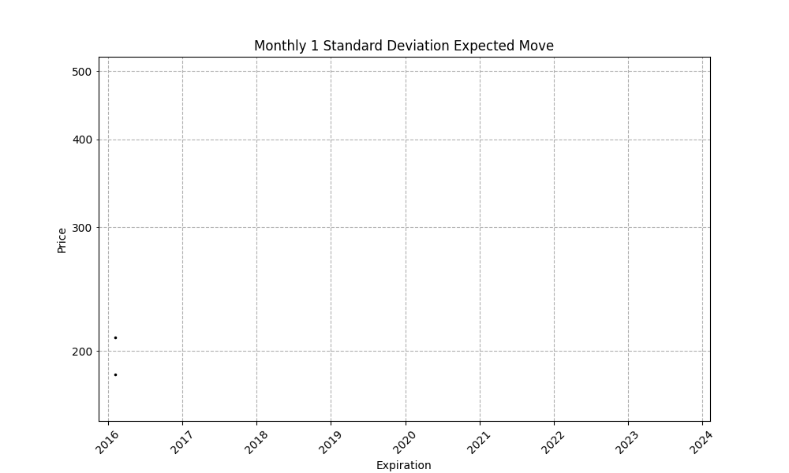

Monthly SPY Standard Deviation Move
Visualizing Volatility Expectations Using Options
Introduction
In this article, we visualize historical expectations and realized outcomes of the 30 day "expected move" in SPY using options.
Methodology
Data is collected each day from January 2016 to December 2023 for options closest to 30 days to expiration. The put and call options are plotted and tracked to determine if they are touched before expiration or expire in the money. Quotes and greek caluclations are as of 3:45 PM EST each trading day.
Visualization
Each day the the 16 delta put and call closest to 30 days to expiration are plotted at their expiration date. Previously plotted points are colored yellow if they begin trading in the money, and red if they expire in the money. The resulting graph provides a visual representation of the particular expected move and realized outcomes.
